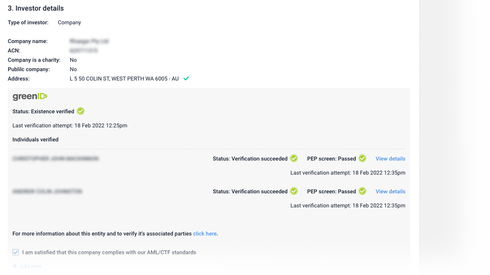
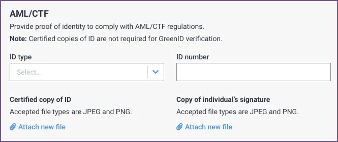

Giving compliance teams one place to verify investors.
Registry Direct holds a database of individuals, companies, and trusts with all their associated details.
Under Australian law, companies and trusts on the platform are legally required to verify the identity of shareholders before accepting any investments. Historically, this process was entirely manual — managed outside the platform through document submissions.

What capability were we aiming to build?
Our clients needed a streamlined way to verify new shareholders without running a separate compliance workflow outside the platform.
The goal was to give them a single in-platform path to satisfy AML and CTF requirements prior to accepting an investment, covering both Australian/NZ investors via an automated identity check, and international investors via a structured manual review.
Some of the challenges

We evaluated multiple providers before settling on GreenID by GBG, the most stable API with the best documentation. But GreenID only covers Australian and NZ investors, so we needed a fallback for international shareholders.
Given the low volume of international investors, we decided a manual verification path (scanned documents) was defensible, even though some clients pushed for a fully electronic solution. The cost of a second API for a small subset was hard to justify.
Verification failures added another design challenge. They can be legitimate (a name that genuinely doesn't match) or benign (a recently changed address). The design had to give clients context to make a judgement call, and a path to manually override or re-verify.

Design and build process
We deliberately waited on prototyping until we fully understood what the GreenID API could and couldn't do. Once we had a clear picture, we built prototypes and ran facilitated sessions with a select group of clients.
These sessions surfaced edge cases around partial verification states we hadn't anticipated, which fed directly back into the design before release.
The end result was that clients could now manage all AML and CTF requirements within Registry Direct prior to accepting investments, compliant with Australian law, with no need to manage multiple systems.